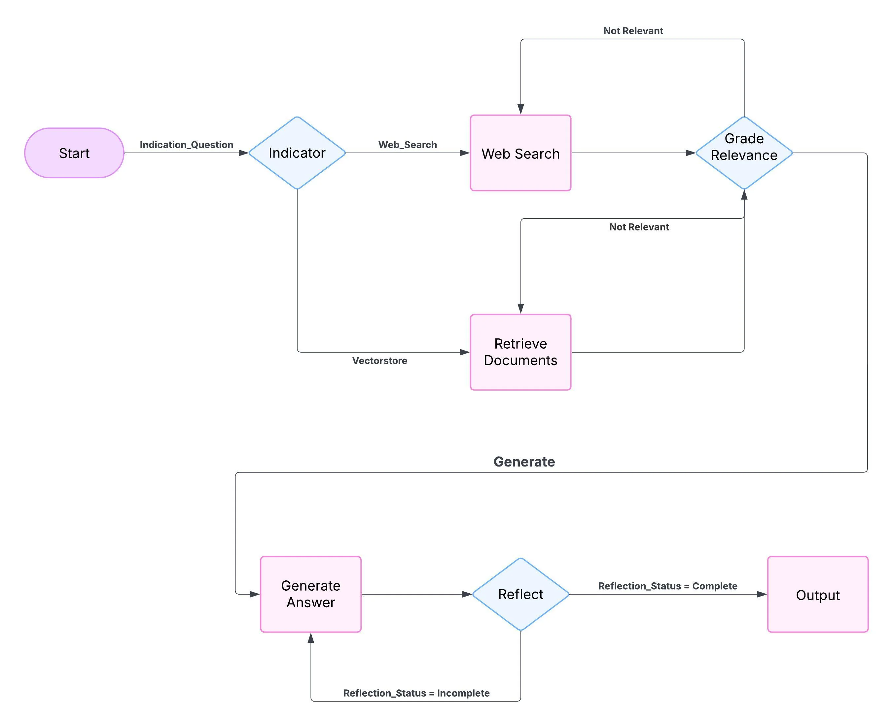
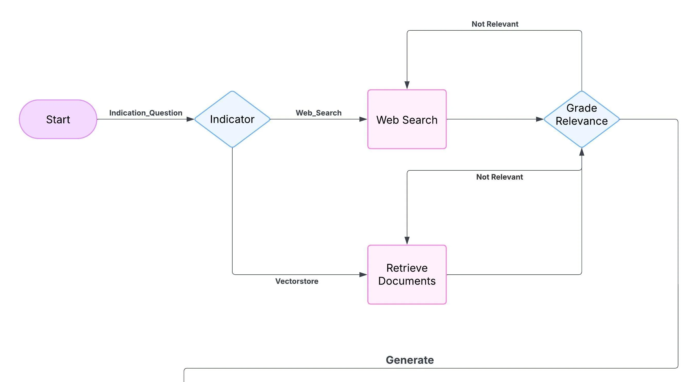
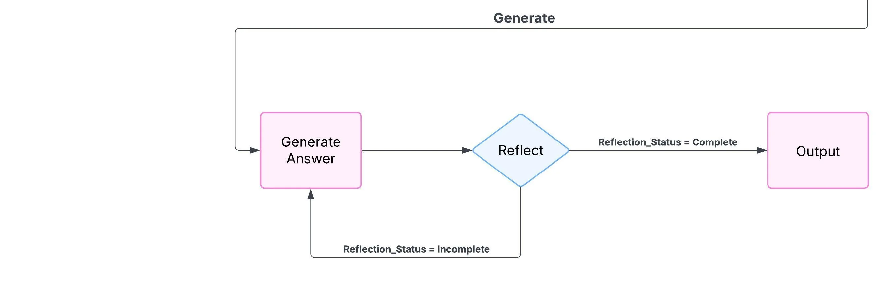

Grade the retrieval
A grader LLM evaluates whether retrieved chunks actually answer the query.
Autonomous decision graph
 Agents & automation / Self-correcting RAG
Agents & automation / Self-correcting RAGA self-correcting RAG system powered by a local LLM that autonomously decides whether to retrieve from a local Chroma DB vector store or perform a web search, via an indicator routing function. After drafting an answer it runs reflection checks for completeness and hallucination checks for factual correctness, looping through a state-graph workflow to regenerate until the answer passes. Delivered as a notebook, Local_RAG_LLM.ipynb.
Naive RAG returns whatever it retrieves, even when the retrieval is bad. The system should know when it doesn't know.
A grader LLM evaluates whether retrieved chunks actually answer the query.
Failing queries are rewritten; the graph loops until a confident answer or a bounded refusal.
Ollama keeps everything on-device for privacy.
Routes the user's question to local retrieval or web search.
Chroma DB vector store scan, or web search if local docs don't suffice.
Local LLM drafts an initial answer.
Evaluates completeness; may add missing details.
Screens for factual inaccuracies.
Updates context or re-generates the answer if necessary.
The graph decides between local retrieval and a web search on its own.
Chroma DB holds the document context.
Completeness and factual correctness are verified before a response is finalized.
Iterative refinement drives goal-oriented behaviour.
Conditional decisions and loops until the answer passes.
Explore the material
behind the project.
Presentations, research, and supporting material from the project repository, alongside the original project media.
Original system diagram from the project repository.

Enlarge ↗36 cells · 0 saved charts. Read the analysis, code, and recorded results.
Read the project overview, setup notes, and technical documentation.
4 images
Select an image to explore.



Have an idea, a challenge, or a different perspective?
I’d love to hear it.
{kind=link}
{kind=link}
{kind=link}
{kind=link}